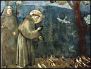
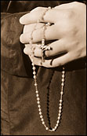
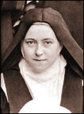

En calle Corrientes 1851 (de mi Buenos Aires querido), hay una de esas librerías medio berretas. Vi hoy, en una mesa de saldos, los siguientes títulos de una misma mesa y colección y editorial (tapa blanca, con alguna foto):
-
"El mundo, la carne y el Padre Smith", de B. Marshall ;
"Nueva historia de Mouchette", de Bernanos ;
"Retratos" de Papini.
Hoy, fiesta de San Francisco, John trae como número 4 de su serie sobre maneras de rezar el rosario la corona franciscana. ( Como el post me cayó "sobre la hora", dejo el link, nomás).
-
El rezo del Rosario: 31 días, 31 maneras
( por John Da Fiesole de Disputations; adaptación y traducción libre )
Número 3
El Rosario es lo que el Latín era: así como el Latín en un tiempo era la lengua común para la liturgia, conocida por todos , así el Rosario es la devoción privada más extendida. Hay montones de oraciones, devociones, letanías... pero el Rosario es lo que uno espera que casi todo católico practicante conozca.
Tal vez por esta razón, entre otras, sea la devoción más usada para el rezo grupal (deberíamos decir que la primera razón es la eficacia espiritual del Rosario; por lo cual ha sido recomendado siempre; por lo cual casi todos lo conocen y practican).
Cuando el Rosario se reza en grupo, lo usual es contar con un "conductor" que se encarga de enunciar el misterio y de rezar la mitad de cada PadreNuestro, Ave María y Gloria; el resto reza la otra mitad; el resto de las oraciones suelen rezarse en conjunto.
Comparado con el rezo privado, rezar el Rosario en grupo es una experiencia muy distinta. Por ejemplo, yo suelo estar preocupado por mantener la velocidad de los rezos (no sé si todo el mundo reza más lento en privado que en público), por no perderme una cuenta del rosario... A veces mi mente queda en blanco, y todo lo que puedo "meditar" mientras pasan los AveMarías es "Eh... en que misterio estábamos?".
Es de las cosas que uno naturalmente paga para estar en Comunidad. Uno sacrifica los propios hábitos, gustos, fortalezas y debilidades para poder participar de un determinado grupo. Y no es muy distinto en la familia, en el trabajo, en la Misa ... hasta manejando en la calle. Es parte de lo que implica pertener a un grupo.
¿Y que gano a cambio de esos sacrificios ? Comunidad, claro está. Estoy unido físicamente (por la vista y por el oído) a otras personas en una oración común a Dios. Esta unión es central para el sentido del Cristianismo: el grupo de hombres que es llamado para adorar al Padre y a su unico Hijo, en su Espíritu Santo. Y Jesús está en medio; está de una manera diferente que cuando cierro la puerta de mi habitación y rezo solo.
Pero, momento: hay más. Cuando estoy rezando el Rosario en privado y me distraigo, lo único que queda en la habitación es el sonido de mi voz. Pero cuando mi mente divaga en la oración grupal, ... no puedo esperar que al menos uno del grupo está meditando bien, y así tapando los huecos de mis distracciones ? De igual modo en que cuando yo medito bien, acaso estoy ayudando a los que se distraen.
Y aparte están las oraciones sueltas que pueden beneficiarme, como cuando los otros rezan por mí -en cuanto miembro del grupo-, y las ocasiones que pueden surgir para pedir al grupo que recen por alguna intención en particular.
Finalmente: nunca hay que menospreciar la gracia de que a uno le pidan rezar por las intenciones de otro: que esto es cosa de ángeles...
 Hoy la Iglesia recuerda a San Francisco de Asís (1181-1226) quizás el santo más popular de todos los tiempos.
Este amante alegre de la pobreza, de los hombres, de los animales y de toda la creación, que hablaba con los pájaros y con el fuego, que compuso el Cántico al Hermano Sol, uno o dos años antes de morir, recibió los estigmas de Cristo y vivó sus últimos años casi ciego, con su cuerpo molido por las mortificaciones y los dolores.
Chesterton escribió un librito sobre él, y dice algo sobre estos contrastes.... Acabo de escanear parte del primer capítulo, para sacar algunas frases; pero releyéndolo, prefiero dejarlo casi entero:
-
...
A un materialista no ha de importarle que esas contradicciones se concilien o no. Un católico no ha de ver contradicción alguna que deba conciliarse. Pero en este libro me dirijo al hombre moderno en su tipo corriente: simpatizante pero escéptico; y puedo esperar, aunque sea vagamente, que, acercándome a la historia del gran santo, a través de lo que hay en ella claramente pintoresco y popular, podré comunicar al lector una mayor comprensión de la coherencia de aquel carácter en su conjunto.
Y que, acercándonos a él de este modo, podremos, por lo menos, vislumbrar la razón que asistió al poeta que alabó al Sol, para esconderse a menudo en oscura caverna.
Por qué el santo que se mostró tan dulce con su Hermano el Lobo, fue tan rudo con su Hermano el Asno (según motejó a su propio cuerpo) .
Por qué se apartó de las mujeres el trovador que dijo abrasarse en amor.
Por qué el poeta que se gozaba en la fuerza y la alegría del fuego, revolvió su cuerpo en la nieve.
Por qué el mismo canto en que grita con toda la pasión de un pagano: "Loado sea Dios por nuestra Hermana la Tierra, que nos regala con variadas frutas, con hierba y flores brillantes", casi termina así: "Loado sea Dios por nuestra Hermana, la Muerte corporal".
Presentar el monte Alverno como el simple fracaso de Francisco equivale, exactamente, a presentar el monte Calvario como el simple fracaso de Cristo. Tales montañas, montañas son, sean como fueren, y es necio decir que son huecos relativos o cavernas negativas abiertas en el suelo. Existieron manifiestamente para significar culminaciones y señalar linderos. Tratar de los estigmas como de una especie de escándalo, que nos conmueve tiernamente, pero con pena, es cosa idéntica a tratar las cinco llagas de Cristo como cinco manchas en su persona.
Puede repugnarte la idea del ascetismo; puede, igualmente, repugnarte la idea del martirio; por esta razón puede repugnarte sincera y naturalmente el concepto del sacrificio total que simboliza la cruz. Pero, si es una repugnancia inteligente, conservarás aún cierta aptitud para darte cuenta del punto culminante de la historia, de la historia de un mártir, o aun de la de un monje. No podrás, racionalmente, leer el Evangelio y considerar la Crucifixión como una ocurrencia tardía, o una falta de gradación, o un accidente en la vida de Cristo; es, muy a las claras, el punto culminante de la historia, como la punta de una espada, de aquella espada que traspasó el corazón de María.
Y, racionalmente, no podrás leer la historia de un hombre presentado como espejo de Cristo, sin comprender su fase final como Hombre de Dolor y sin apreciar - siquiera artísticamente- lo bien que le sienta recibir, en una nube de misterio y soledad, y no infligidas por mano de hombre, las heridas incurables y eternas que sanan al mundo.
Para los admiradores racionalistas de San Francisco,
cosas como los Estigmas son un obstáculo,
porque, para ellos, la religión era una filosofía.
Era una cosa impersonal y, únicamente, de entre las cosas
terrenas, la pasión más personal nos procura, con relación a
ella, un paralelismo aproximado. Un hombre no se revuelca en
la nieve por una corriente natural que conduzca las cosas a
cumplir la ley de su existencia. No andará sin alimento, en
nombre de algo que conduzca a la rectitud, y que no sea
precisamente el egoísmo. Hará estas cosas, u otras muy
parecidas, bajo un impulso bien distinto. Hará estas cosas
cuando este enamorado.
El primer hecho que debe notarse, al
hablar de San Francisco, se halla envuelto en el hecho
inicial de su historia, cuando dijo, en un principio, que
era trovador y proclamó, más tarde, que era trovador de un
más noble y nuevo romanticismo, no usaba de simple metáfora:
se comprendía mejor a sí mismo que le comprenden sus
eruditos. Fue un trovador, aún en las peores agonías del
ascetismo. Fue un enamorado. Un enamorado de Dios y también
un enamorado de los hombres (cosa que encierra,
posiblemente, una vocación mística todavía singular).
Un enamorado de los hombres es casi lo contrario de un filántropo y, por cierto, la pedantería del vocablo griego nos proporciona algo así como una sátira de ello. Un filántropo, puede decirse, que ama a los antropoides.
Pero, como San Francisco no amó a la humanidad, sino a los hombres, tampoco hubo de amar a la Cristiandad, sino a Cristo. Podrás decir, si así te parece, que era un demente, amante de una persona imaginaria; pero, en todo caso se trataba de una persona imaginaria, no de una idea imaginaria. Y, para el lector moderno, la clave del ascetismo y de muchas otras cosas se encuentra mejor en las historias de enamorados que más bien nos parecen dementes.
[...] este libro se dirige solamente a aquella
porción del mundo moderno que halla en San Francisco cierta
dificultad moderna; que se siente capaz de admirarle y que,
no obstante, le acepta a duras penas; o que puede apreciar
al santo, prescindiendo casi de la santidad.
Y mi único
derecho de intentar siquiera semejante tarea consiste en
que, durante largo tiempo, me encontré en distintos
eslabones de un estado semejante.
Una infinidad de cosas que ahora comprendo, en parte, las imaginé del todo incomprensibles; muchas cosas que ahora tengo por sagradas, las hubiera desdeñado como totalmente supersticiosas; muchas cosas que, al considerarlas ahora internamente, me parecen lúcidas y resplandecientes, hubiera dicho, con sinceridad, que eran obscuras y bárbaras, cuando las contemplé en su apariencia, durante aquellos días lejanos en que, por vez primera, la gloria de San Francisco prendió fuego en mi fantasía.
También yo he vívido en la Arcadia ; pero, en la
misma Arcadia encontré a un hombre, que vestía hábito pardo
y amaba a los bosques más que a Pan.
La figura con hábito
pardo se levanta sobre la chimenea de la estancia donde
escribo y es la única, entre muchas otras imágenes, que en
ninguna etapa de mi peregrinación dejó de serme familiar.
Existe cierta armonía entre la chimenea y la luz de la
lumbre y el primer placer que hallé en sus palabras sobre el
Hermano Fuego, pues su recuerdo se levanta bastante
remotamente en mi memoria, para mezclarse con los ensueños
más domésticos de los días juveniles. Las mismas sombras
fantásticas que proyecta la lumbre, ejecutan una callada
pantomima, parecida a la que divierte a los pequeños, y
aquellas sombras que yo veía eran, ya entonces, sus sombras
favoritas de fieras y pájaros, tal como él las vio,
grotescas, pero con una aureola de amor divino. Su Hermano
Lobo y Su Hermana Oveja casi se parecen a la Hermana Raposa
y al Hermano Conejo de un Tío Remo más cristiano. Poco a
poco he logrado ver nuevos aspectos maravillosos de aquel
hombre, pero nunca olvidé el que ahora me place evocar.
Su figura se halla como en un puente que enlaza mi conversión y mi infancia a través de muchas otras cosas, ya que la historia romántica de su religión penetró hasta el racionalismo de aquella vaga época victoriana. Porque he realizado esta experiencia, podré guiar a otros en el camino, un poco más allá; pero, solo un poco más allá. Nadie mejor que yo sabrá que, en tal camino, andarían con temor los mismos ángeles, mas, con todo y ver seguro mi fracaso, no me abruma el temor, puesto que el Santo supo tolerar a los locos con alegría.
G. K. Chesterton. "San Francisco de Asís", Capítulo 1. Fragmentos.
En HMS (blog yanqui católico) se está discutiendo en estos días la eterna cuestión :
- "¿Por qué Dios se encarnó como hombre (varón)?"
Gregory Popcak tira posibles respuestas como para empezar a pensar:
- Accidente: Había que elegir uno de los dos sexos; Dios tiró la moneda y se encarnó como varón.
- Política: O acaso mejor, sociedad y cultura . Para cumplir su misión terrena dentro de la sociedad judía de aquel tiempo, para ser tenido -al menos provisoria e imperfectamente- como "maestro", debía ser hombre.
- Misoginia divina: Para Dios el varón es "mejor" que la mujer
- Fenomenología: La masculinidad de Jesús es un "hecho" que comunica una verdad esencial sobre la manera en que Dios se relaciona con el mundo creado.
Vamos pues por la última.
No es fácil, pues algunos intentos de justificarla esa cuarta respuesta a través de imágenes "metafóricas" pueden caer en la segunda. Por ejemplo, decir "Las imágenes del Rey (poderoso y guerrero) y del Pastor (protector), son aspectos divinos que debían ser comunicados a un pueblo que sólo podían concebir esos roles en un varón" ... no está mal, pero es claramente insuficiente: en este caso seguimos dentro de metáforas "culturales", que por lo tanto no tienen un valor absoluto (es decir: pueden servir para una cultura y no para otra). Se busca una justificación "absoluta", en el sentido que se aplique a la "esencia" de la naturaleza humana.
Mark Shea (muy lejos de los maestros y alumnos progresistas mencionados)
señaló:
La masculinidad de Jesús, en efecto, es significativa:
es decir, es un signo . "Significa" (es un signo de) que
la masculinidad es una realidad inherente a nuestra relación con Dios
(y también la femineidad, claro, como el otro término de la relación).
Y ante Dios, la humanidad es femenina. (Mark
cita a Chesterton: "Los hombres son hombres; pero el Hombre es mujer",
asumiendo que la última proposición se refiere al ser humano en su
relación con Dios; la cita viene de la primera página
de Napoleón en Notting Hill, pero no estoy seguro de que se aplique
acá).
Todavía esto no explica claro por qué la relación del hombre con Dios sería "significada" por el dualismo mujer-varón, ni por qué al ser humano le correspondería el papel "mujer", ni por qué esto implica que Jesús se encarne como varón. Pero se vislumbra la explicación.
Karl de Summa Contra Mundum nos invita a mirar sus pasados posts sobre esta cuestión ( Is God sexist? ) donde a su vez nos remite a un texto de el viejo oligarca. Veré si lo leo mañana.
Gregory recibe muchos aportes, y resume la respuesta estándar: Dios eligió encarnarse como varón porque eso conviene al cumplimiento de su Alianza "nupcial" con la humanidad. El mundo recibe a Dios como la mujer recibe al varón en el abrazo nupcial. Y también la masculinidad de Dios encarnado es significativa porque él "entra" en la creación, y la creación concibe el fruto de esta unión.
Para San Pablo, (Ef. 5:23 ) el matrimonio del hombre y la mujer es una imagen (una imagen no "convencional", sino que está en esencia del ser humano) de la unión mística de Cristo con la Iglesia. De esto se puede deducir también el sentido y la significación del sacerdocio masculino dentro de la Iglesia Católica.
Kate apunta también un elemento interesante: Cristo, hablando de la relación matrimonial, dice: "el varon dejará a su padre y su madre, y se unirá a la mujer..." (Mt. 19:5). Notar que esta imagen del varón que busca a la mujer para unirse con ella -y no a la inversa-, el "cortejo", refleja también el modo en que Cristo "busca" a la Iglesia, y Dios al Hombre. (Los místicos suelen insistir en esto: en el fondo no es el hombre el que busca a Dios, sino al revés; ver el Cantar de los Cantares, San Juan de la Cruz, Francis Thompson, ... y Simone Weil).
También hay en el mismo post unas reflexiones tomadas de von
Balthasar sobre la "masculinidad" de Dios, respecto de nosotros,
incluso "dentro" de la Trinidad.
Todo muy interesante, y acaso después volvamos sobre esto.
En todo caso, ya que hablé de San Juan... pero este post quedó muy largo;
sigo después.
-
El rezo del Rosario: 31 días, 31 maneras
- Lectura El lector comienza a leer un texto, usualmente extraido de las Escrituras. Con lentitud y detenimiento, posiblemente en voz alta; no tanto para comprender o estudiar el texto sino para escuchar la palabra de Dios, que le habla aquí y ahora.
- Meditación Mientras se lee, el Espíritu Santo nos lleva a detener la atención en algunas determinadas palabras o frases... el lector se detiene, repitiendo esas palabras para dejar que llenen su mente y su corazón. Cuando le parece apropiado, continúa la lectura.
- Oración La meditación conduce naturalmente a la oración: y la lectio divina no es la excepción. En ocasiones, el lector se sentirá movido a ofrecer oraciones espontáneas a Dios -de petición, acción de gracias o alabanza. Terminada la oración, continúa la lectura o meditación.
- Contemplación. La contemplación en el caso de la lectio divina es del tipo llamado "contemplación infusa", un regalo de Dios que el lector puede o no llegar a experimentar. Se trata de simple receptividad, callada e inmóvil en la presencia de Dios.
( De Disputations, adaptación y traducción libre )
Número 2
Se lee en el libro "La doctrina de la Iglesia Católica", de Herbert McCabe OP :
-
La oración no es solamente para pedir. Además de la oración
de petición, está la oración de alabanza y la oración
de acción de gracias.
Por otro lado, la meditación de los misterios de la fe está muy relacionada con la oración, y conduce naturalmente a ella. Un forma popular de este tipo de meditación es el Rosario.
¿Cómo? ¿Acaso el Rosario no es una oración?
Bueno... sí y no.
Más bien es meditación mental embebida en oración vocal.
Y además hay que tener en cuenta que
la primera mitad del Ave María (a la cual se juntó la segunda
mitad recién alrededor del siglo XVI) no es propiamente una oración,
sino más bien un saludo -de ahí el término "Salutación Angélica";
y que las oraciones que suelen rezarse antes y después de las "décadas",
se orientan a preparar el alma para la meditación de los misterios.
Pero releyendo lo que dice Fr. McCabe, podemos decir: el Rosario es una forma de meditación que naturalmente conduce a la oración. Esto también se aplica a la "Lectio divina", una forma de leer la Escritura y otros textos espirituales siguiendo estos pasos:
La lectio divina ha sido siempre cosa característica de la orden religiosa Benedictina; y en los últimos veinte años ha habido un crecimiento explosivo de su popularidad entre los laicos.

Ahora bien: si estos pasos son adecuados para leer la Palabra
de Dios, ¿ por qué no lo serían para meditar la vida, muerte
y resurrección de la misma Palabra ?
Hagamos de la anunciación de cada misterio el equivalente
de la lectura de la Palabra.
Repitamos el misterio hasta que algún aspecto de él
nos hable, como tema para meditar. Mientras recitamos
los Ave-Marías, démosnos la libertad de interrumpirnos
y ofrecer una oración espontánea si nos sentimos impulsados
a ello -aunque suene raro eso de interrumpir una oración con otra.
De esta manera, la meditación puede entrar en contacto con
nuestras tristezas y nuestras alegrías del día de hoy.
Quizás Dios nos bendiga con algún momento de contemplación:
si es así, a su fin, continuemos la meditación donde la habíamos
dejado.
Obviamente, esta manera de rezar el Rosario sólo se aplica al rezo individual, y en un ambiente solitario y calmo. Pero hay que imaginar cuánto nos puede dar una sola media hora de paz solitaria, en intimidad con Dios, aunque sea una vez por semana, dentro de las otras ciento sesenta y siete horas y media de agitación y locura.
-
El rezo del Rosario: 31 días, 31 maneras
- Señal de la cruz
- Credo
- Una "decena" Para cada uno de los cinco misterios del día:
- Enunciar el misterio.
- Padre Nuestro
- Diez Ave-Marías (meditando el misterio)
- Gloria
- Oración de Fátima
- Un Padre Nuestro, tres Ave-Marías y Gloria
- Una Salve
- Señal de la Cruz
- La Anunciación del Angel
- La Visitación a Isabel
- El Nacimiento de Jesús
- La Presentación en el Templo
- Jesús perdido y hallado en el templo
- La Agonía en el huerto
- Los Azotes en la columna
- La Coronación de espinas
- Jesús cargando la Cruz
- Crucifixión y Muerte de Cristo
- La Resurrección de Cristo
- La Ascensión de Cristo
- La Venida del Espíritu Santo en Pentecostés
- La Asunción de la Virgen María
- La Coronación de María como Reina y Señora de todo lo creado
- hacer la Señal de la Cruz
- recitar el Credo de los Apóstoles
- recitación vocal de las cinco decádas del Rosario mientras se medita uno de los tres conjunto de misterios
- rezar la Salve
- rezar el Rosario usando un rosario bendecido por un sacerdote
( por John Da Fiesole de Disputations; adaptación y traducción libre )
Número 1
Empezamos por lo básico: el rezo normal del Rosario:
[N del T: la versión original tiene leves diferencias, pone el punto 4 antes de las cinco decenas; éste es el orden normal por acá; a veces se omite el Credo o la oración de Fátima o la Salve; el punto 4. suele dedicarse a las intenciones del Papa; texto de las oraciones acá]
Los cinco misterios gozosos, se rezan tradicionalmente el lunes y jueves, y los domingos del adviento:
Los cinco misterios dolorosos, el martes y viernes, y los domingos de cuaresma:
Los cinco misterios gloriosos, miércoles y sábados y domingos
Nada nuevo por aquí; esto es simplemente el Rosario Dominicano -llamado así porque es la versión del rosario predicada por la orden dominicana, a la cual ha sido asignada la promoción de esta devoción por la Santa Sede. (Los dominicos, en cambio, usan una versión con leves variantes; de modo que, curiosamente, la orden dominica en realidad no reza el Rosario Dominico)
Todo esto no parece muy extraordinario; pero no viene mal recordar que las acciones siguientes pueden merecer indulgencias parciales:
Más: podemos llegar a obtener una indulgencia plenaria si rezamos el Rosario "en un templo u oratorio público, en familia, en una comunidad religiosa o asociación pía" (también hay una indulgencia plenaria conectada con usar un rosario bendecido por un obispo en la fiesta de San Pedro y San Pablo).
Ahora bien, tal vez uno no tenga necesidad de ganar indulgencias... Si es así, siempre podemos ganarlas para las almas del purgatorio, con el solo requisito de ser uno bautizado, no excomulgado, en estado de gracia, y con la intención de ganar las indulgencias para los muertos. Para que nadie diga que no hay gracias que cuestan poco...
El mes de octubre es el "mes del Rosario" (el 7 de octubre, aniversario de la batalla de Lepanto, es el día de nuestra Señora del Rosario). John de Disputations se propone aportar para cada día del mes una "forma distinta de rezar" el Rosario. Buena idea.
Como también es buena idea el hecho de comprometerse "públicamente" a hacerlo...
lo cual puede ser un medio muy efectivo para forzarse a uno mismo a hacer el bien:
Cuenta Santa Teresa de Jesús en los capítulos 3 y 4 de
su Vida
los esfuerzos que tuvo que hace contra su propia alma para forzarse a entrar a monja;
por un lado, ella "veía" que ésa era su vocación, pero por otro lado, la parte "natural"
de su alma se resistía al modo de vida religioso. Tenía alrededor de 18 años.
Buena conocedora ella de sus propios pequeños defectos, se vale de ellos para
vencerse a sí misma:
-
Leía en las Epístolas de San Jerónimo, que
me animaban de suerte que me determiné a decirlo a mi padre, que
casi era como a tomar el hábito, porque era tan honrosa que me
parece no tornara atrás por ninguna manera, habiéndolo dicho una vez.
Y acaso, a traducir los posts de John.
PS: Releyendo, veo que es ridículo eso de "comprometerse" a "acaso" hacer algo. Pero debe entenderse que me comprometo a lo primero (rezar el rosario todos los días del mes); y que "acaso" me dedique, además, a traducir los dichos posts ....
Acabo de terminar una novelita que me prestaron el domingo, "El mundo, la carne, y el P. Smith , de Bruce Marshall; escritor que me era totalmente desconocido.
Muy linda. La historia de un cura en Escocia, primera mitad de siglo XX. Además de que el autor parece saber de lo que habla, está contada con un estilo muy agradable, despegado, con mucho diálogo indirecto, y con una suave ironía llena de afecto hacia sus personajes...
Algo que acaso se parezca -se me ocurre ahora- a la mirada que nuestros ángeles de la guarda tendrán sobre nuestras vidas... (digo yo, cayendo un poco en esa imagen naif de los ángeles que hoy a la mañana criticaba...).
La leí con mucho gusto, y bastante emoción. Forma parte de una de esas colecciones que se venden en mesas de saldos en las librerías de calle Corrientes.
Y aunque no tiene nada que ver con nada: un fragmento (no muy representativo, en realidad):
- He observado frecuentemente que la inteligencia
de cualquier concentración de personas funciona en razón
inversa al número de los reunidos. Quizá suceda lo mismo
con el fervor religioso. Quizá el Señor quería que se le
interpretase literalmente cuando dijo
"Donde están dos o tres reunidos en mi nombre, allí
estoy yo en medio de ellos". A lo mejor quiso decir que
cuando fuesen seis o siete los reunidos, incluso
en su nombre, no se hallaría en medio de ellos.
Me acerca Ignacio esta segunda parte ( buscar el Editorial ) de la nota que había salido en El Mundo sobre un exorcismo... otra sesión, otros testigos (esta vez nada escépticos), iguales protagonistas.
Dos advertencias para estómagos delicados: 1) el sitio es "de derecha" y 2) la página está hecha con el FrontPage ... (180 kb, más de la mitad con líneas en blanco y código html basura).
Me recuerda Pablo que hoy, 2 de octubre, el santoral festeja a Los Angeles Custodios; entre nosotros, más común resulta hablar del "ángel de la guarda".
La existencia de los ángeles forma parte de la fe católica. Y además, como decía el gran Orígenes (siglo II):
-
Los cristianos creemos que a cada uno nos
designa Dios un ángel para que nos guíe y proteja
No es una creencia o una devoción muy "vivida" por los cristianos modernos (me incluyo, con pesar), por varios motivos... Por un lado, la tendencia moderna a la "inmanencia", a un universo cerrado a lo sobrenatural, no deja mucho lugar para seres personales espirituales ajenos al mundo visible y al mismo tiempo actuantes en él; por otro, la exaltación (en buena parte justificadas) de la "dignidad" del hombre, y de su condición "carnal", repugna a la noción de seres que nos serían "superiores por naturaleza"... y precisamente por su naturaleza no corporal. Incluso, se me ocurre, el hecho de que la devoción al ángel de la guarda sea la devoción más "individualista" que existe, tan poco adaptable a las prácticas exclusivamente "comunitarias"...
Y si al dogma estricto sumamos las especulaciones teológicas ... por ejemplo, para Santo Tomás los ángeles son más numerosos que toda multitud material; y encima cada ángel no es un individuo dentro una especie (así como yo soy un individuo dentro de la especie "hombre") sino que cada ángel constituye una especie única ... Es deslumbrante, pero también vertiginoso.
Pero hete aquí que, mientras los cristianos iban dando cada vez menos lugar en su espiritualidad a los ángeles, curiosamente (bah, no tanto), la onda "new age" los puso de moda; en versiones heréticas para uso femenino; ángeles infantiles y tiernos, ángeles de "energía" y buenas ondas; ángeles que "se sienten a tu alrededor", consuelos inventados por la imaginería más sentimental... y carnal.
Es una suerte, entonces, que la Iglesia permanezca en su dichosa impertubabilidad, contra modas de uno y otro signo, enseñando la doctrina de siempre, en el Catecismo y en la catequesis personal del Papa:
- .... El tema a que hemos aludido podrá parecer
"lejano" o "menos vital" a la mentalidad del hombre moderno. Y sin embargo la
Iglesia, al proponer con franqueza toda la verdad sobre Dios creador,
incluso de los ángeles, cree prestar un gran servicio al hombre. El hombre tiene la
convicción de que en Cristo, Hombre-Dios, es él (y no los ángeles) quien se halla
en el centro de la Divina Revelación. Pues bien, el encuentro religioso con el
mundo de los seres puramente espirituales se convierte en preciosa revelación de su
ser no sólo cuerpo, sino también espíritu, y de su pertenencia a un proyecto de
salvación verdaderamente grande y eficaz dentro de una comunidad de seres
personales que para el hombre y con el hombre sirven al designio providencial de
Dios....
...en la conciencia de la Iglesia se ha formado la persuasión sobre el ministerio confiado a los ángeles en favor de los hombre. Por ello la Iglesia confiesa su fe en los ángeles custodios, venerándolos en la liturgia con una fiesta especial, y recomendando el recurso a su protección con una oración frecuente, como en la invocación del "Ángel de Dios". Esta oración parece atesorar las bellas palabras de San Basilio: "Todo fiel tiene junto a sí un ángel como tutor y pastor, para llevarlo a la vida"
Juan Pablo II
Catequesis sobre los Angeles
Primero, los lectores de Tolkien estarán evocando la figura de los Valar; y efectivamente, tienen mucho en común -dentro de los límites de esa particular mitología- con la concepción católica de los ángeles:
-
[los Valar] son, como si dijéramos, poderes angélicos cuya función consiste en
ejercer la autoridad en sus esferas (de regencia y gobierno, no de creación,
hechura o rehechura). Son «divinos», es decir, estaban originalmente «fuera» y
existían «antes de» la creación del mundo. Su poder y sabiduría derivan del
Conocimiento que tienen del drama cosmogónico, que percibieron al principio como
drama (es decir, como percibimos una historia hecha por algún otro) y luego como
«realidad». Desde el punto de vista de la mera narración, por supuesto, esto tiene
por fin procurar seres del mismo orden de belleza, poder y majestad que los
«dioses» de la más alta mitología, que pueda todavía ser aceptada... bueno, diremos
sin mucha precisión, por una mente que cree en la Santísima Trinidad.
J. R. R. Tolkien - Carta a Milton Waldman
-
¿Quién, si yo gritara, me oiría desde los coros de los ángeles?
Y aun suponiendo que alguno de ellos
me acogiera de pronto en su corazón,
su existencia más poderosa me aniquilaría.
Porque lo bello no es sino el comienzo de lo terrible,
ése grado que todavía podemos soportar;
y lo admiramos tanto porque, sereno, desdeña el destruirnos.
Todo ángel es terrible.
Y así me contengo, sofocando el llamado seductor
de oscuros sollozos ....
Todo ángel es terrible. También nuestro ángel de la guarda, es de suponer. Y sin embargo, hay que festejarlo, en su día; y -siempre- acordarse de él para pedir ayuda y consejo.
Acá está el programa del festival de Guitarras del Mundo, pero solamente de los recitales en la sede del C.C. San Martín (hay otros recitales en otras sedes porteñas, y en otras 70 ciudades del país).
Fue reconocido como auténtico (aunque falta la firma papal) un milagro atribuido a la Madre Teresa de Calcuta, con lo cual está a un paso de la beatificación.
Clarín anoticia del comienzo del festival "Guitarras del Mundo" que se hace todos los años, en Buenos Aires y el resto del país; durante esta semana y la siguiente. Lamentablemente (acaso debido a la magnitud del asunto) no hay un programa detallado...
De todas maneras, veo que hoy está Juanjo Domínguez en la sala AB del Centro Cultural San Martín (Sarmiento 1551), a las 20 hs; entrada gratuita, como siempre (pero conviene retirar la entrada antes, por las dudas).
1 de octubre: fiesta de Santa Teresa del Niño Jesús
(Santa Teresita, o Teresa de Lisieux) 1873-1897
Recuerdo que la conocí en mis tiempos de semicatecúmeno-autodidacta, leyendo en la Espasa Calpe datos de mi querida Santa Teresa de Jesús (Teresa de Avila). Esta otra Teresa, tan distinta en casi todo, venía a continuación; nada muy notable, por lo que me pareció... Poco tiempo después, revolviendo libros usados, encontré su Vida (Historia de una Alma) y -a $1- la compré y leí durante un viaje en tren. Acostumbrado a la reciedumbre de la Teresa española, la prosa de esta francesa anticuadamente "moderna", con algunos giros sulpicianamente devotos y sus triples signos de admiración, me desagradaron un poco. Sin embargo, alcancé -apenas- a percibir algo de la grandeza que ocultaba ese exterior ingrato.
 Yo no tenía idea, en ese entonces (y la Espasa Calpe, no mucho) de la importancia enorme que había estado tomando esa monjita de fines del 1800 durante todo el siglo XX. Sabía, sí, que monjitas "santas", hay muchas... demasiadas; que las mismas congregaciones están interesadas en contar con personajes canonizados, y que no son pocos los libritos devotos de espiritualidad dudosa y prosa edulcorada, escritos por monjas "con olor de santidad" por obediencia a superioras que quieren tener "su santa"... Vanidad de vanidades.
Más tarde, no pude menos que reconocer que la Iglesia -a
pesar de todo- sabe discernir ... Y todavía me asombra la rapidez
y la seguridad con que Papas y teólogos supieron reconocerla, a pesar
del ambiente y a pesar de algunas apariencias. Una monja
carmelita más; que ni siquiera escribía bien;
formada en un ambiente culturalmente mediocre y burgués;
que murió tuberculosa a los 24 años, sin salir nunca
de su convento, sin tratar con grandes personajes,
sin experiencias místicas, ni milagros ...
sin hacer nada.
Con una doctrina (si es que así puede llamarse
a lo poco que dejó escrito, sin ninguna sistematización)
de una especie de "niñez espiritual", de un
"caminito" para llegar a Dios... ¿No son estas
las puerilidades típicas de la espiritualidad más
decadente y mediocre?
Yo -que me las sé todas- habría dicho eso, creo.
La Iglesia, empezando por el Papa Pío X, y siguiendo
por todos los demás, y montones de teólogos,
dijo : "No. Momento. Acá hay algo nuevo;
acá hay algo grande de verdad. Mirá de nuevo; con cuidado."
... Y así era nomás.
La cosa culminó con algo que un siglo atrás hubiera
sido impensable: Santa Teresita declarada
"doctora de la Iglesia" en 1997 por Juan Pablo II.
El que no sepa apreciar la importancia de esto, puede
sospecharlo del hecho de que en sus 20 siglos
de historia, la Iglesia ha
declarado 33 doctores;
y de los últimos tres siglos, de entre la multitud
de santos y teólogos de primera calidad, el
único "doctor" ... es esta monjita.
-
Signo de la aceptación eclesial de la enseñanza de la Santa es el hecho
de que el Magisterio ordinario de la Iglesia en muchos documentos ha recurrido
a esa doctrina, especialmente al tratar de la vocación contemplativa y
misionera, de la confianza en Dios justo y misericordioso, de la alegría cristiana
y de la vocación a la santidad. Lo atestigua la presencia de su doctrina en el
reciente Catecismo de la Iglesia católica. Ella, que tanto se esforzó por
aprender en el catecismo las verdades de la fe, ha merecido ser incluida entre los autores más destacados de la doctrina católica.
Teresa tiene una universalidad singular. Su persona y el mensaje evangélico del «caminito» de la confianza y de la infancia espiritual han encontrado y siguen encontrando una acogida sorprendente en todo el mundo. El influjo de su mensaje abarca ante todo a los hombres y mujeres cuya santidad o virtudes heroicas la Iglesia ha reconocido, pastores de la Iglesia, teólogos y autores de espiritualidad, sacerdotes y seminaristas, religiosos y religiosas, movimientos eclesiales y comunidades nuevas, hombres y mujeres de cualquier condición y de todos los continentes. A todos Teresa les ofrece su personal confirmación de que el misterio cristiano, del que es testigo y apóstol mediante la oración al convertirse, como ella afirma con audacia, en «apóstol de los apóstoles» (Ms A 56 r), debe tomarse al pie de la letra, con el mayor realismo posible, porque tiene un valor universal en el tiempo y en el espacio. La fuerza de su mensaje radica en que explica de modo concreto cómo todas las promesas de Jesús se cumplen plenamente en el creyente que acoge con confianza en su vida la presencia salvadora del Redentor.
Juan Pablo II
Santa Teresita, ruega por nosotros.
-
... En cuanto al Edén, creo que la mayoría de los cristianos, excepto
los muy simples e incultos o los que están protegidos de alguna
otra forma, vienen siendo ya desde hace algunas generaciones
atormentados por las teorías científicas, de modo que han
abandonado el Génesis en el cuarto trastero de su mente como si
se tratara de muebles fuera de moda, un poco avergonzados de
tenerlos en casa, cuando los brillantes jóvenes listos vienen de
visita: y hablo, por supuesto, de los fideles que no los
vendieron como artículos de segunda mano o no los quemaron tan
pronto como los partidarios del gusto moderno empezaron con
sus burlas. En consecuencia, han olvidado, por cierto (yo mismo como
el que más), la belleza del asunto aun «como
historia».
Lewis escribió recientemente un ensayo sumamente interesante (no sé si se ha publicado) en el que muestra qué gran valor nutricio tiene para la mente el «valor en cuanto a cuento» de la entera historia cristiana (especialmente el NT). Era una defensa de ese tipo de actitud que nos parece despreciable: la del pusilánime que pierde la fe, pero al menos se apega a la belleza «del cuento» por tener algún valor permanente. Afirma que de ese modo obtiene todavía alguna nutrición y no queda del todo separado de la savia de la vida: pues la belleza del cuento, aunque no necesariamente una garantía de su veracidad, es concomitante de ella, y un fidelis debe obtener nutrición de la belleza tanto como de la verdad. De modo que el «admirador» pusilánime obtiene algo todavía, que aun uno de los fieles (estúpido, insensible, avergonzado) puede estarse perdiendo.
Pero yo, en parte como desarrollo de mi propio pensamiento sobre mi
obra (técnica y literaria), en parte por mi contacto con C.S.L.,
y no en poca medida por la firme guía de Alma Mater Ecclesia,
no siento vergüenza ni dudas acerca del «mito» del Edén.
Por supuesto, no tiene la misma especie de historicidad del
Nuevo Testamento,
que es prácticamente un documento contemporáneo, mientras que
el Génesis está separado por no sabemos cuántas tristes
generaciones de exiliados desde la Caída;
pero por cierto hubo un Edén en esta muy desdichada tierra.
Todos lo añoramos y tenemos constantes atisbos de él: nuestra entera
naturaleza, en lo que
tiene de mejor y menos corrompido, de más gentil y humano, está
todavía bañada por la sensación de «exilio».
... Nunca lo recuperaremos, pues no es ése el camino del arrepentimiento,
que avanza en espiral y no en un círculo cerrado; puede que
recobremos algo que se le parezca, pero en un plano superior.
Por supuesto, supongo que, sometida al permiso
de Dios, la entera raza humana
es libre de no volver a elevarse, sino de ir a la perdición y
llevar la Caída hasta su amargo fondo (como cada individuo puede
hacerlo singulariter).
Y en ciertos períodos, y éste es especialmente uno de ellos,
ése parece no sólo un acontecimiento probable, sino
inminente.
Todavía creo que habrá un «milenio», los profetizados mil años de gobierno santo, esto es, de los que, a pesar de todas sus imperfecciones, no habrán nunca inclinado el corazón ni la voluntad ante el espíritu del mal (en términos modernos, pero no universales: el mecanicismo, el materialismo «científico», el socialismo en cualquiera de sus facciones ahora en guerra). ...
J. R. R. Tolkien
(fragmentos de una carta a su hijo Christopher; enero de 1945)
San Jerónimo pasó sus últimos 35 años en Belén, cerca de la gruta del Nacimiento.
Se cuenta que una noche de Navidad, terminada la fiesta, los fieles se fueron y el santo se quedó rezando solo frente al pesebre. Y le pareció que el Niño Jesús le decía:
- Jerónimo, es mi cumpleaños ... ¿qué me vas a regalar?
- Señor, te regalo mi salud, mi fama, mi honor, para que dispongas de todo como mejor te parezca- respondió Jerónimo.
- ¿Y no me regalas nada más?
- Mi amado Salvador -exclamó el anciano- por Ti repartí ya mis bienes entre los pobres. Por Ti he dedicado mi tiempo a estudiar las Sagradas Escrituras... ¿qué más te puedo regalar? ... Si quisieras, te daría mi cuerpo para que lo quemaras en una hoguera y así poder consumirme del todo por Ti.
Pero el Niño le dijo:
- Jerónimo: regálame tus pecados, para perdonártelos.
(de EWTN)
Hoy, 30 de septiembre, es la fiesta de San Jerónimo : contemporáneo de San Agustín; asceta, gruñón y libresco (aprendió hebreo para traducir la Biblia); es uno de los "doctores" de la Iglesia (mañana tenemos otro, muy lejos en el tiempo, en el carácter y en casi todo).
Aguante Jerónimo, uno de mis santos favoritos.
-
Cumplo con mi deber, obedeciendo los preceptos de Cristo, que dice:
Estudiad las Escrituras, y también: Buscad, y encontraréis, para que no tenga que decirme, como a los judíos:
Estáis muy equivocados, porque no comprendéis las Escrituras ni el poder de Dios. Pues, si, como dice el apóstol Pablo, Cristo es el poder de Dios y la sabiduría de Dios, y el que no conoce las Escrituras no conoce el poder de Dios ni su sabiduría, de ahí se sigue que ignorar las Escrituras es ignorar a Cristo.
Por esto, quiero imitar al padre de familia que del arca va sacando lo nuevo y lo antiguo, y a la esposa que dice en el Cantar de los cantares: He guardado para ti, mi amado, lo nuevo y lo antiguo; y, así, expondré el libro de Isaías, haciendo ver en él no sólo al profeta, sino también al evangelista y apóstol. Él, en efecto, refiriéndose a sí mismo y a los demás evangelistas, dice: ¡Qué hermosos son los pies del mensajero que anuncia la paz, que trae la Buena Nueva! Y Dios le habla como a un apóstol, cuando dice: ¿A quién mandaré? ¿Quién irá a ese pueblo? Y él responde: Aquí estoy, mándame.
San Jerónimo. Introducción a su comentario del libro de Isaías.
El "pronunciamiento del Episcopado" de ayer.
Aviso/warning:
Si lo leés para enterarte de la situación argentina, buscate una silla
cómoda (podés quedarte dormido antes de terminarlo).
Si en cambio sos católico y lo leés para apreciar la calidad del catolicismo en Argentina,
tené un pañuelo a mano (es para llorar).
Si sos político, editorialista, maestro de escuela, etc, que está buscando frases para armar
uno de esos discursos de sonoridad correcta e inofensiva, que son el análogo de la "música funcional"
de las salas de espera, ... entonces puede servirte.